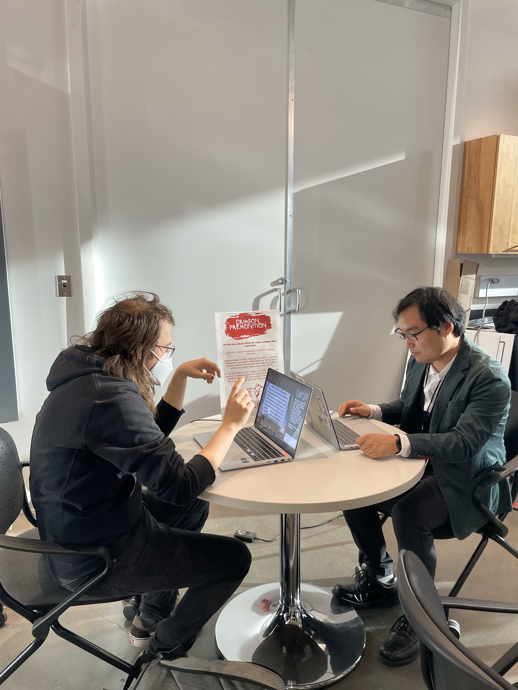
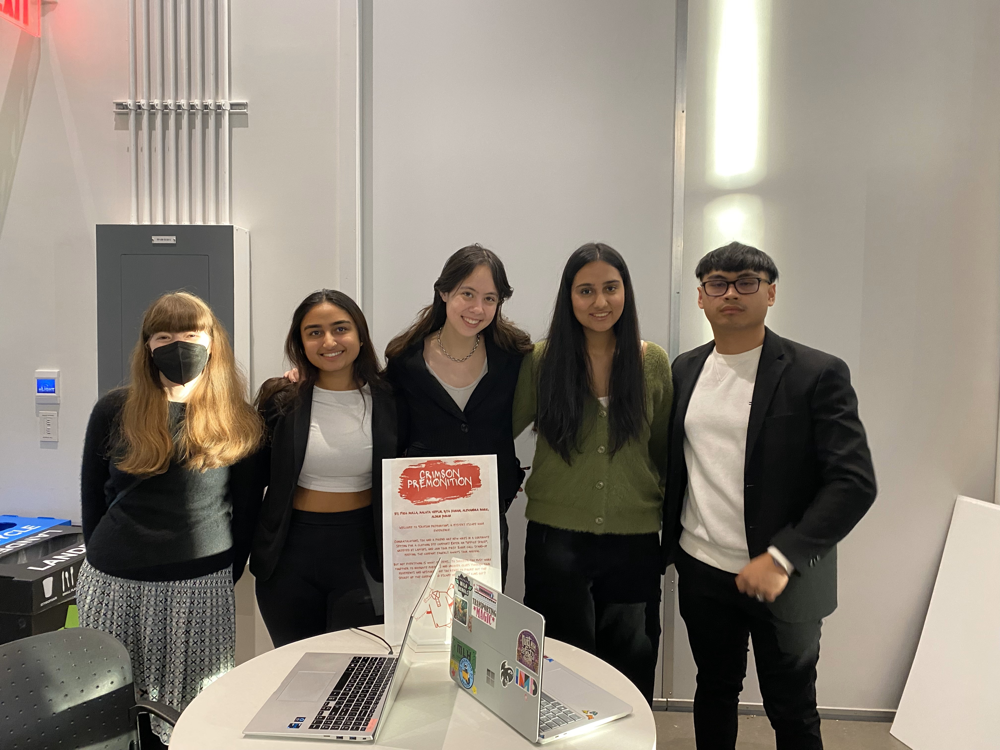

December 2023
team: Malaya Heflin, Riya Kanani, Alexandra Maric, Fiza Mulla, Aldrin Duran
tools: Unity, C#, Google MediaPipe
Congratulations! You're a new hire at an emerging company, about to join your first stand-up call. But, something
seems to be off...
"Crimson Premonition" is a short multiplayer game in which 2 players have to work together to solve a series of
clues. These clues are implemented with gestural recognition (tracking body movement/position via webcam), particle systems,
and audio/image manipulation. It was publicly exhibited on December 8th, 2023, at the Brendan Iribe Center,
as part of the
Immersive Media Design End of Year Show 2023.

project poster!
quick play-through

participants working together at showcase

the team :)
✰ my specific contributions
- utilizing Google MediaPipe and C# script to track user's fingers, then using position data to alter characteristics of an audio output
- designing and implementing "Zoom"-like interface with hand-drawn buttons and built-in Unity UI kit
- working with team to implement multiplayer features via Tailscale and Unity networking